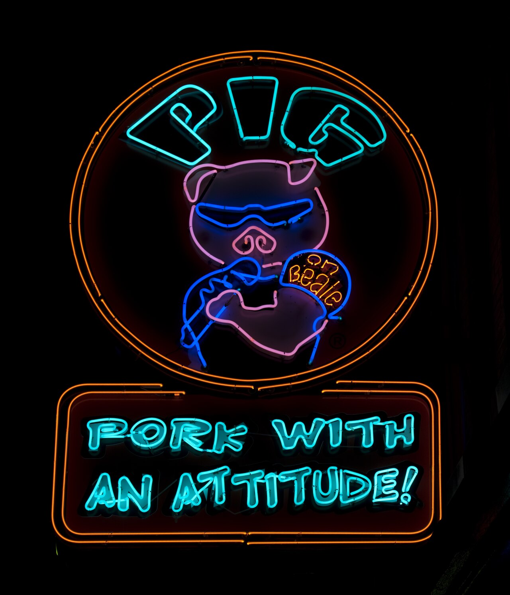
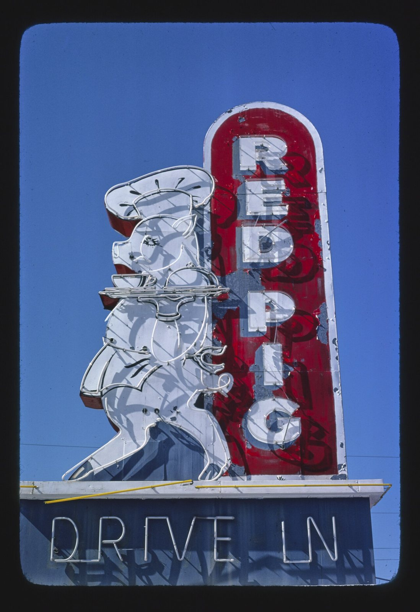
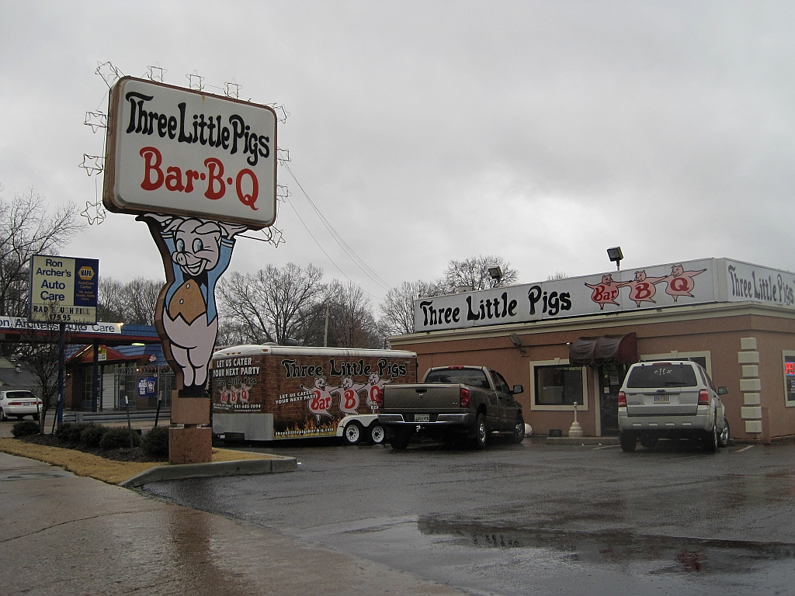
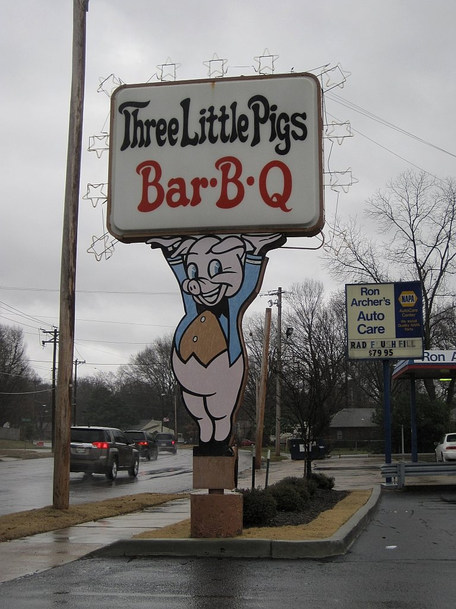

pig artthe pig that serves itself
also: cannibal pig · suicide food · the self-serving pig · pig in a chef's hat
Nobody who paints one calls it anything. It is just the pig.

A barbecue sign on which the pig is not the meat but the staff: a pig in a chef's toque carrying a covered tray, a pig in an apron at a pit, a pig in sunglasses eating a pork sandwich, a pig holding the restaurant's own name over its head. The animal about to be served is drawn recommending the meal, and the joke is never explained on the sign because it does not need to be. The form runs from nineteenth-century trade cards to lit plastic on a bypass, and both Carolinas are full of it.
What the pig is doing
Three arrangements cover most of them, and a reader can sort a sign from a moving car.
The pig is the cook. A toque — the tall white pleated chef's hat — an apron, sometimes a fork. Red Pig Drive-In at Nahunta, Georgia, photographed by John Margolies in 1979, is the neon version: a white pig in a toque, upright on two trotters, carrying a domed serving tray at shoulder height, the words RED PIG running down a red pylon beside it and DRIVE IN in neon along the base.
The pig is the customer. Carol Highsmith's photograph of the Pig on Beale sign in Memphis catches a neon pig in wraparound sunglasses with both trotters round a pork sandwich, mid-bite, under the line PORK WITH AN ATTITUDE!
The pig is the employee. Three Little Pigs Bar-B-Q in Memphis has a pig in blue dungarees holding the whole signboard over its head, and three more along the roofline each carrying one letter of BAR-B-Q. The pig here is not eating and not cooking. It is working for the business that sells it.


{kind=link}

{kind=link}
The blog that named it
For five years a Seattle blogger collected these. Suicide Food ran from 20 December 2006 to 27 December 2011 and posted 929 times, most posts carrying several images. Its author signs himself Ben; the surname Grossblatt comes from a profile Lindy West wrote in The Stranger in November 2007, and appears nowhere in the blog itself.
The blog's own definition, from its header, is a depiction of animals that "act as though they wish to be consumed". Every entry got a rating on a five-point scale headed Psych Evaluations and counted in nooses, from one noose, mildly troubling, to five. The pig tag holds 539 posts and the bbq tag 399, which is the largest strand in the file by a wide margin; chef hat runs to 114 and sunglasses to 107. An eleven-part series across four years gave the recycled stock-clipart pig its own name: Repetitious Porcine Emblemology.
The blog is vegan advocacy and says so; the last post calls the project a pause rather than an ending. It is still online. This project uses it as what it is — the only systematic catalogue of the genre anyone has made — without taking up its argument.
Older than the neon
The pig was doing this before electricity. Richard Sheaff, writing for the Ephemera Society of America, notes that American chromolithograph trade-card makers had a particular fondness for pigs on two legs, and singles out cards from J. S. & M. Peckham of Utica, New York — a firm that made agricultural furnaces and pig scalders — as apparently cannibalistic. The cards are not dated on that page, and Peckham was a nineteenth-century firm, so the genre is older than 1900 by an unfixed margin.
Inference — what the form solves is a drawing problem. A barbecue restaurant has to put an animal on its sign, because that is what it sells, and a dead pig does not sell lunch. Standing the pig up, dressing it and handing it a tray moves it out of the category of carcass and into the category of host. The sign painter is not making a point about slaughter. He is avoiding one.
In the Carolinas
The Carolina examples that are free to show are the ones a government camera happened to catch. Margolies photographed Maurice Bessinger's sign at West Columbia, South Carolina, in 1988: a pig called Little Joe in a red shirt, hands behind its back, standing on the crown of a BAR-B-Q sign over the words Flying Pig, Coast to Coast. The pit offices burned in October 2024 and the sign survived.
Tradition holds — the form is everywhere in both states, on plastic pylons, on painted plywood at a firehouse fundraiser, on a smoker trailer's door, and most of those pigs are the same few pieces of clip art bought by a sign shop and reused across a county. What is scarce is not the pigs but free photographs of them: most Carolina signs standing today are photographed under copyright, so this record leans on Georgia, Tennessee and one South Carolina survivor to show a form the Carolinas are thick with.


Facts
| kind | sign |
|---|---|
| state | both |
| region | The Carolinas, The American South |
| links | Suicide Food — the blog that catalogued the genre · Pig Scalders and Such — Ephemera Society of America |
| confidence | medium · needs verification · updated 2026-09-16 |
Its kin
Pictures
Sources
- Suicide Food — Ben (surname not given on the blog; named as Ben Grossblatt by The Stranger) · link
- Suicide Food — Lindy West, 2007 · link
- Suicide foods: eager-to-be-eaten food mascots — Cory Doctorow, 2007 · link
- The Smiling Pigs of Suicide Food — Andrew Simmons, 2011 · link
- Suicide Food — Mariann Sullivan, 2011 · link
- Pig Scalders and Such — Richard Sheaff · link
- John Margolies Roadside America Photograph Archive, 1972-2008 — John Margolies · link
- Carol M. Highsmith's America — photographs in the Carol M. Highsmith Archive — Carol M. Highsmith · link
- Wikimedia Commons · link
- Maurice Bessinger — Wikipedia · link
Where it came from: Cited a source we name · Harvested pulled from an open dataset · Tradition what the tradition says, hedged · Inference this project's reasoning · Field somebody stood there. This record as JSON.